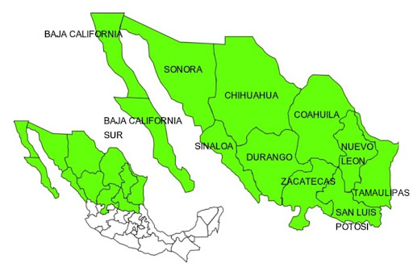
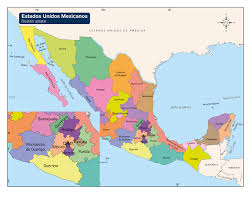
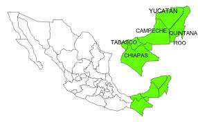

Como buena parte de las tradiciones en México, la gastronomía mexicana también tiene su origen en la época prehispánica, específicamente de las cultura maya y azteca. Y es que las variedades y exquisiteces que reinan en nuestra cocina, anteriormente giraban en torno al ingrediente rey, el maíz. Para acompañar a esta alteza, estaban otros ingredientes como los frijoles, los chiles, el aguacate, tomate, algunos insectos, carne de conejo, guajolote, rana y una infinidad de frutas que predominaron; entre ellas, las ciruelas. Pero con la llegada de los españoles al territorio azteca, el mestizaje que se produciría no sería sólo entre las personas, sino también entre sus culturas, y así, también se vería influida la gastronomía mexicana.Así, nuestra tradición culinaria local se vio aún más enriquecida con la llegada de productos provenientes de Europa.Cereales, como el trigo y el arroz fueron los más importantes; también, el ganado ovino y vacuno, carne de pollo, cerdo y otros derivados, y especias desconocidas hasta el momento para los mexicanos de la época como la pimienta negra y el orégano, llegaron de lejos para ser parte de la gran familia de ingredientes que harían gala de la nueva gastronomía mexicana.Con estos ingredientes presentes en la mesa, nace la cultura culinaria tan reconocida en México.
historia de la comida mexicana
Regiones culinarias de mexico
Zona norte de mexico
Famoso por sus carnes asadas y su cocina más influenciada por la gastronomía del sur de los Estados Unidos. El cabrito, los burritos y el machacado son algunos de los platillos típicos.
Zona centro
Hogar de la cocina mestiza, donde se fusionan ingredientes prehispánicos con influencias coloniales. Aquí nacieron los tacos, las enchiladas y el mole poblano.
Zona sur
Con una fuerte herencia maya y caribeña, es conocida por platillos frescos y exóticos como el cochinita pibil y los panuchos. Los ingredientes como el achiote y los cítricos son fundamentales.
Ingredientes clave en la historia de la comida mexicana
La cocina mexicana es famosa por sus sabores intensos y diversos ingredientes.
La base de la cocina mexicana está en sus ingredientes fundamentales, que han sido utilizados por las civilizaciones prehispánicas y siguen siendo esenciales en la cocina actual. Aquí puedes profundizar en el uso de algunos de ellos:
1.Maíz: El ingrediente más importante de la cocina mexicana. No solo se usa para tortillas, tamales y atole, sino que también es considerado un alimento sagrado en las culturas indígenas.
2.Chiles: México es hogar de una increíble variedad de chiles, como el jalapeño, poblano, habanero, y muchos más. Cada uno aporta un nivel de picante y sabor único, siendo utilizados tanto en salsas como en guisos.
3.Frijoles: Junto con el maíz, los frijoles han sido una fuente básica de proteínas en la dieta mexicana durante miles de años. Se preparan de múltiples formas, desde frijoles refritos hasta en sopa.
4.Nopales: Un ingrediente ancestral que sigue siendo parte fundamental de la cocina, usado en ensaladas, guisos, o como acompañamiento.
5.Chocolate: Introducido por las culturas prehispánicas como bebida ceremonial, el chocolate mexicano tiene una rica historia. Se usa en salsas como el mole, así como en postres.